Guide · Confluence Cloud
Mermaid diagram examples for Confluence: copy and paste
Twelve short Mermaid examples, one per diagram type, each with a line on when to use it. Copy one, change the labels, and paste it wherever your Confluence site draws Mermaid. We rendered every example with Mermaid before publishing this page; the picture under each example shows the result.
Jump to: flowchart, sequence diagram, class diagram, state diagram, ER diagram, Gantt chart, pie chart, mindmap, timeline, user journey, git graph, quadrant chart.
1. Flowchart
For a process with decisions and branches, such as an approval, a runbook or a support escalation.
flowchart TD
A[Request received] --> B{Approved?}
B -- Yes --> C[Order the item]
B -- No --> D[Tell the requester why]
C --> E[Close the request]
D --> E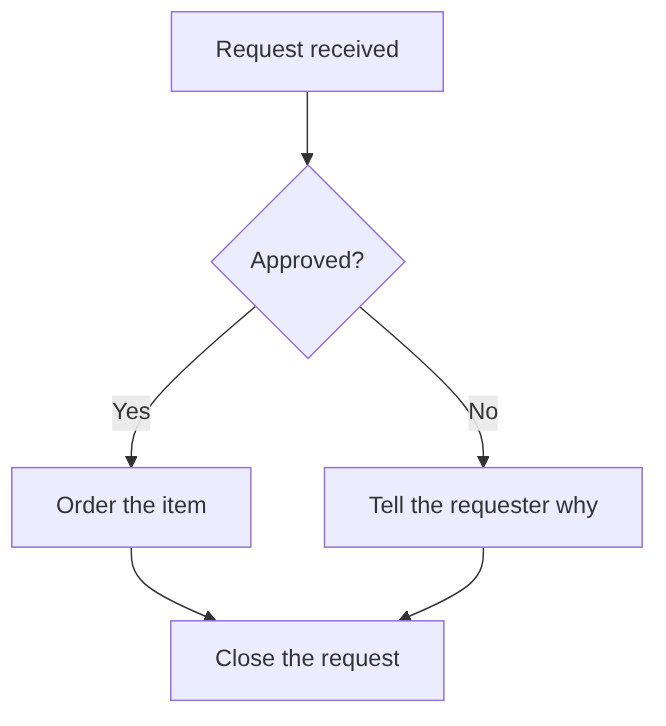
2. Sequence diagram
For who talks to whom, in order: an integration, an API call or a handover between teams.
sequenceDiagram
actor User
participant App
participant API
User->>App: Clicks "Save"
App->>API: POST /pages
API-->>App: 201 Created
App-->>User: Shows "Saved"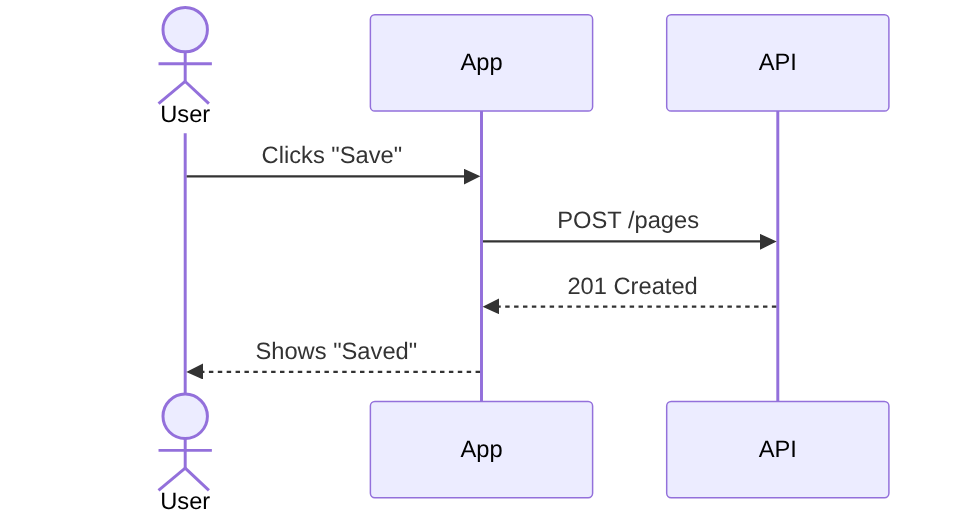
3. Class diagram
For the objects in a system, their fields and how they relate, when you document a data model or code structure.
classDiagram
class Customer {
+String name
+String email
+placeOrder()
}
class Order {
+int id
+Date created
+total() float
}
class OrderLine {
+String product
+int quantity
}
Customer "1" --> "*" Order : places
Order "1" *-- "1..*" OrderLine : contains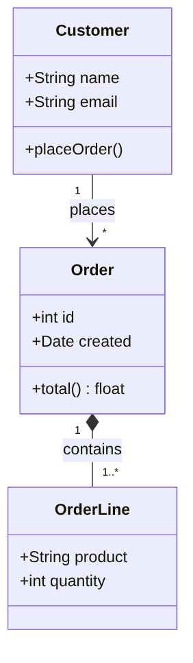
4. State diagram
For the statuses something moves through, such as a document, a ticket or an order, and what moves it on.
stateDiagram-v2
[*] --> Draft
Draft --> InReview : submit
InReview --> Draft : changes requested
InReview --> Published : approve
Published --> Archived : retire
Archived --> [*]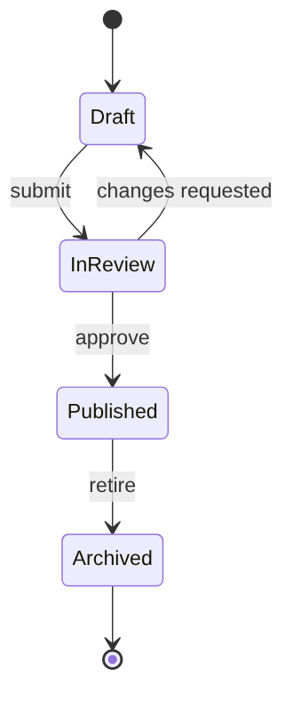
5. Entity relationship (ER) diagram
For database tables, their columns and how they link, when you describe a schema.
erDiagram
CUSTOMER ||--o{ ORDER : places
ORDER ||--|{ ORDER_LINE : contains
PRODUCT ||--o{ ORDER_LINE : "appears in"
CUSTOMER {
int id PK
string name
string email
}
ORDER {
int id PK
int customer_id FK
date created
}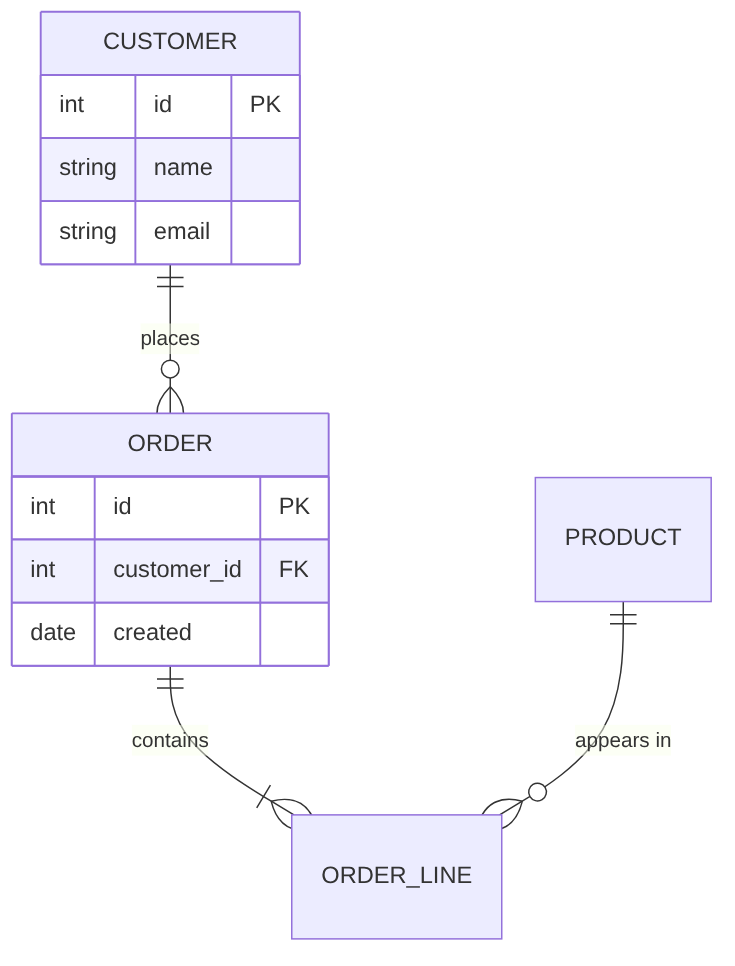
6. Gantt chart
For a project plan with tasks, durations and dependencies that you want to change as text.
gantt
title Website relaunch
dateFormat YYYY-MM-DD
section Design
Wireframes :a1, 2026-11-02, 5d
Visual design :a2, after a1, 7d
section Build
Templates :b1, after a2, 10d
Content migration :b2, after a2, 8d
section Launch
Go live :milestone, m1, after b1, 0d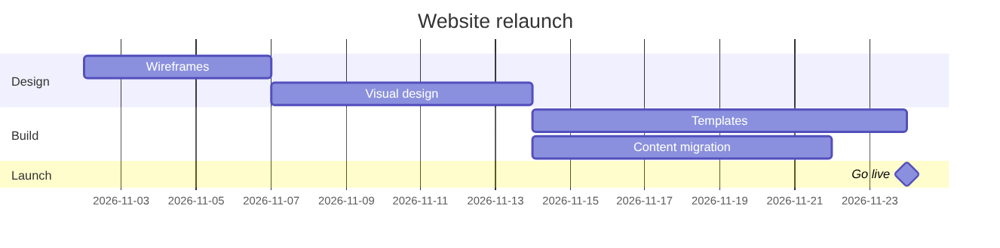
7. Pie chart
For a share of a whole with a few categories, such as tickets per channel.
pie title Support tickets by channel
"Email" : 48
"Portal" : 31
"Chat" : 15
"Phone" : 6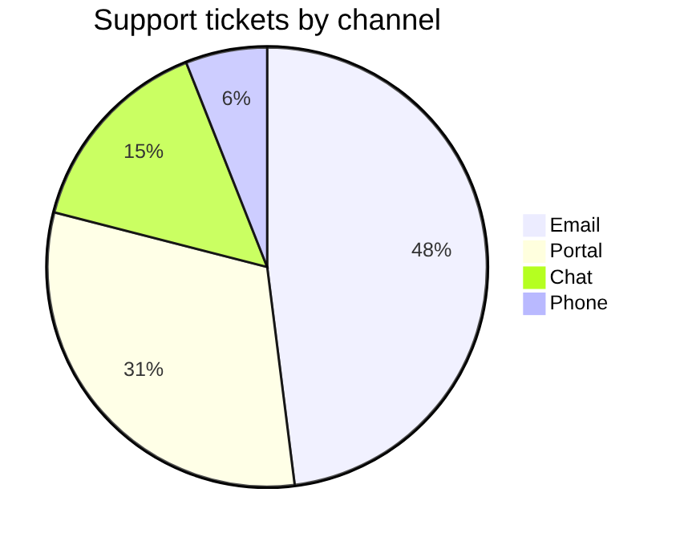
8. Mindmap
For ideas around one topic, in a workshop or a planning page. Indentation sets the levels.
mindmap
root((Team offsite))
Agenda
Retrospective
Roadmap
Logistics
Venue
Travel
Social
Dinner
Workshop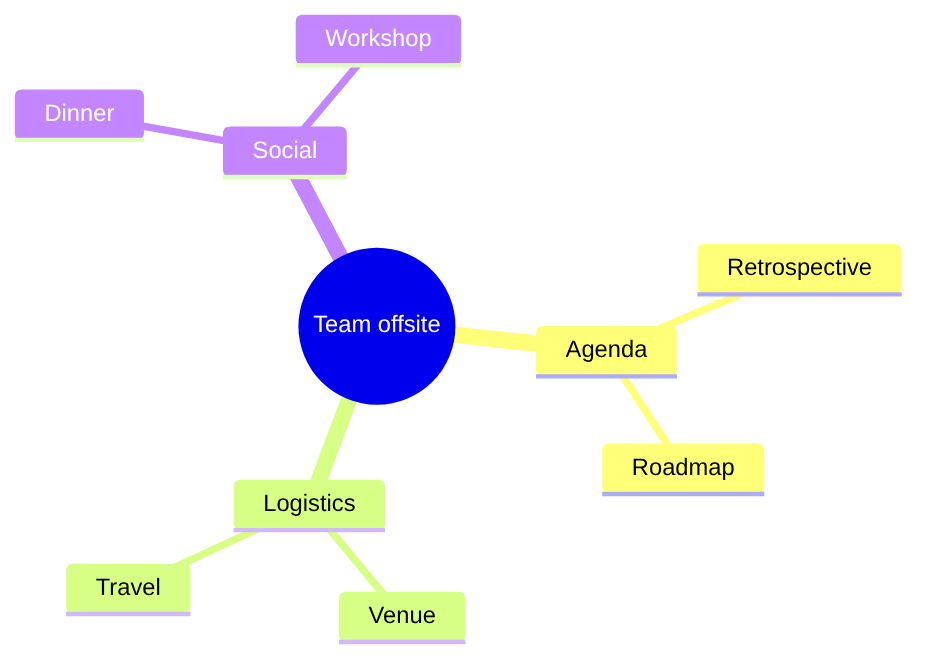
9. Timeline
For phases and milestones over time, such as a product history or a roadmap overview.
timeline
title Product history
2024 : Idea : First prototype
2025 : Beta with five teams
2026 : General availability : First 100 customers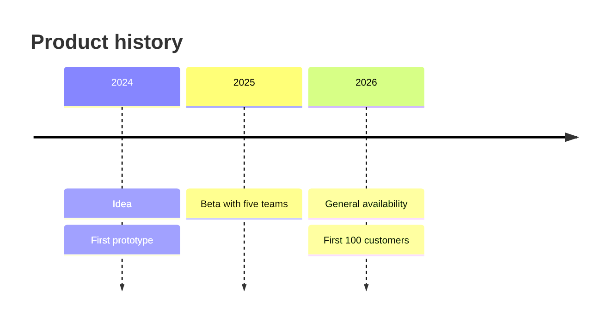
10. User journey
For the steps a person goes through, with a score from 1 to 5 per step and who is involved.
journey
title New employee, first day
section Morning
Collect laptop: 3: Employee, IT
Log in to all tools: 2: Employee
section Afternoon
Meet the team: 5: Employee, Manager
Read onboarding pages: 4: Employee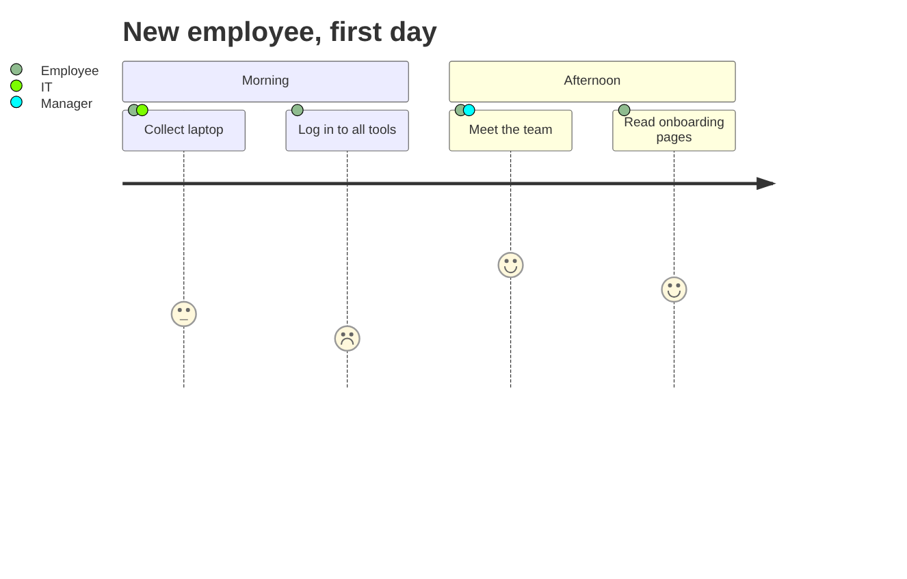
11. Git graph
For explaining a branching strategy: branches, commits and merges.
gitGraph
commit id: "Initial"
branch feature/login
checkout feature/login
commit id: "Add form"
commit id: "Add tests"
checkout main
commit id: "Fix typo"
merge feature/login
commit id: "Release 1.0"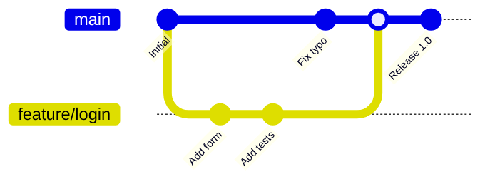
12. Quadrant chart
For placing items on two axes, such as effort against impact for a backlog. Values run from 0 to 1.
quadrantChart
title Backlog: effort vs impact
x-axis Low effort --> High effort
y-axis Low impact --> High impact
quadrant-1 Plan carefully
quadrant-2 Do first
quadrant-3 Fill-ins
quadrant-4 Avoid
Single sign-on: [0.75, 0.85]
Dark mode: [0.30, 0.40]
Export to CSV: [0.20, 0.70]
Rewrite backend: [0.90, 0.30]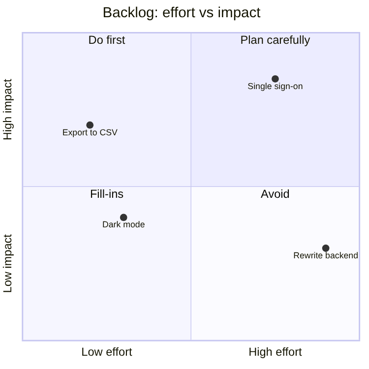
Getting these diagrams into Confluence
Confluence Cloud does not draw Mermaid on its own: pasted code stays a code block. How to add Mermaid diagrams to Confluence Cloud compares the options, from an exported image to a macro. Full disclosure: Dortus makes one of those macros, Mermaid Editor for Confluence. You paste an example on the left, see the diagram on the right while you change it, and the code stays editable in the page. It is on the Atlassian Marketplace.
Questions
An example that does not render for you, or a diagram type you miss? Email support@dortus.com.
See also: How to add Mermaid diagrams to Confluence Cloud (including diagrams from ChatGPT or Claude)